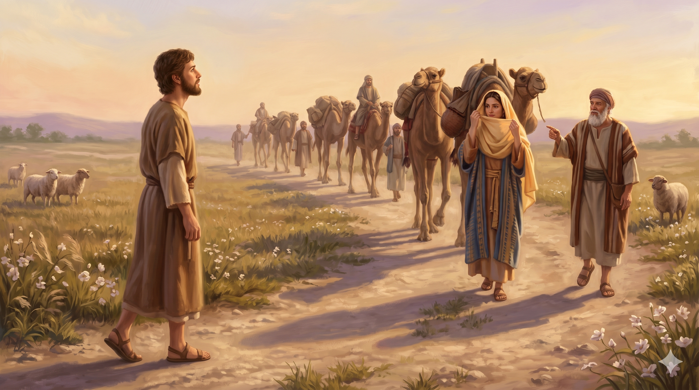

해 질 녘 브엘라해로이의 들판에 홀로 서서 고요히 하늘을 향한 이삭. 말없는 기도가 저녁 바람을 따라 올라가고, 멀리 낙타 행렬이 지평선에 나타나기 시작한다.
그 때에 이삭이 브엘라해로이에서 왔으니 그가 네게브 지역에 거주하였음이라 이삭이 저물 때에 들에 나가 묵상하다가 눈을 들어 보매 낙타들이 오는지라 리브가가 눈을 들어 이삭을 바라보고 낙타에서 내려 — 창세기 24:62–64
성경에 기록된 이삭의 첫 번째 '행동'은 의외로 단순합니다 — 그는 저녁 들에 나가 묵상합니다. 큰 사건도, 모험도, 설교도 아닙니다. 이삭은 "브엘라해로이" 지역에 살았다고 본문은 알려 주는데, 이곳은 전에 하갈이 도망쳐 와 "나를 살피시는 하나님"을 만났던 바로 그 우물가입니다(창 16장). 이삭은 하나님이 한 사람을 살피시고 다시 일으키신 기억이 서린 땅에 자리를 잡고 살았습니다. 그런 그가 저물 때, 사람들이 하루를 마감하며 소란스러워지는 그 시간에 혼자 들로 나가 묵상했다는 사실은 그의 영성의 성격을 보여 줍니다. 히브리어 '라수아흐(לָשׂוּחַ)'는 '깊이 생각하다, 대화하다, 속으로 되뇌이다' 라는 뜻을 지닙니다. 이삭은 떠드는 사람이 아니라 되뇌는 사람이었습니다. 화려한 간증을 남기지 않은 그 잠잠함이 하나님과의 가장 가까운 대화의 자리였습니다.
그 들녘의 묵상은 놀랍게도 바로 그 순간에 응답으로 이어집니다. "눈을 들어 보매 낙타들이 오는지라." 멀리서 리브가가 다가오고 있었습니다. 이삭이 무엇을 놓고 묵상했는지 본문은 침묵합니다. 다만 정황을 보면, 그의 어머니 사라를 잃은 지 얼마 되지 않은 때(창 24:67)였고, 자신의 배우자를 위해 종 엘리에셀이 메소포타미아로 떠난 뒤였습니다. 그는 외로움 속에서 하나님의 예비하심을 묵상하고 있었을 것입니다. 그리고 눈을 드는 그 순간 — 묵상의 끝에서 — 하나님이 그의 아내 될 사람을 친히 데려오십니다. 기도와 응답은 같은 들판에서 만났습니다. 묵상하던 자리를 묵상으로 마치지 않으시고, 눈을 들어 보게 하시는 분이 하나님이십니다.

묵상을 마치고 눈을 든 이삭 — 그 시야 끝에 낙타에서 내려 너울로 얼굴을 가리는 리브가가 걸어온다. 하나님이 예비하신 응답이 지평선을 넘어 오는 저녁.
신앙은 목소리 크기가 아니라 하나님 앞에 앉는 자세로 길러집니다. 이삭처럼 하루에 한 번, 저녁 들녘 같은 자리를 가지십시오. 장소는 아파트 베란다도 좋고, 퇴근길 짧은 산책길도 좋습니다. 중요한 것은 떠드는 세상으로부터 잠시 벗어나 하나님과 속으로 되뇌는 그 순간을 남겨 두는 일입니다. 말이 서툴러도 괜찮습니다. 이삭이 드린 기도는 본문에 한 줄도 기록되지 않았지만, 하나님은 그 속삭임을 정확히 들으셨습니다. 하나님은 잘 다듬어진 언어보다 진실한 한숨과 속마음을 더 귀히 들으십니다.
그리고 묵상의 끝에는 반드시 "눈을 드는" 순간을 두십시오. 우리 영성의 약점은, 기도하면서도 기도 이후의 현실을 보지 않으려 한다는 것입니다. 이삭은 묵상한 뒤 고개를 들어 지평선을 바라봤고, 그 순간 하나님의 섭리가 낙타 행렬처럼 다가오는 것을 발견했습니다. 오늘 당신의 삶에도 이미 오고 있는 응답이 있을 수 있습니다. 걱정의 고개는 숙여 땅을 보게 하지만, 믿음의 고개는 언제나 지평선을 향합니다. 말없이 기도하되, 눈을 드는 용기 — 그것이 이삭의 영성입니다.
들녘의 한 사람을 잊지 않으시는 하나님,
말없는 묵상을 낙타 행렬로 응답하시는 하나님.
오늘 저녁, 당신의 들녘에 서서 눈을 드십시오 — 이미 오고 있습니다.